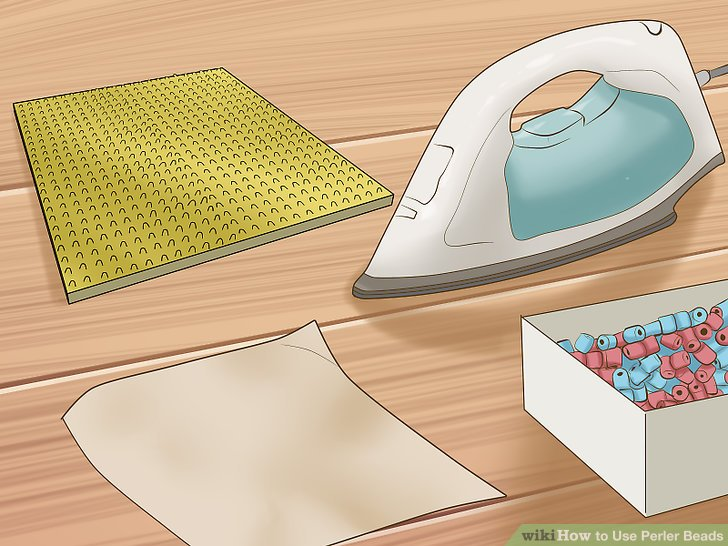
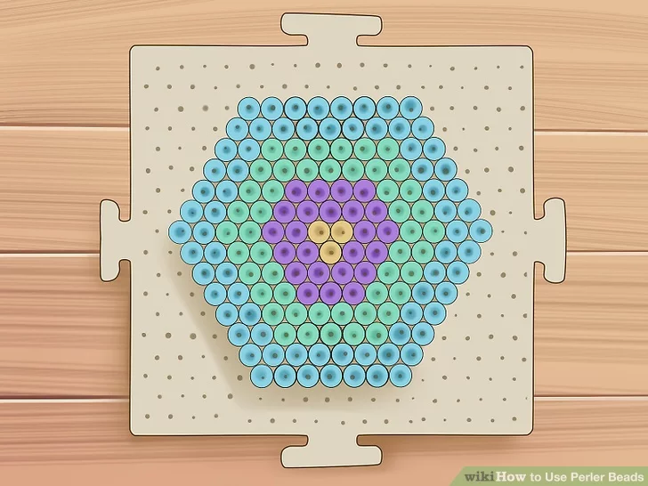
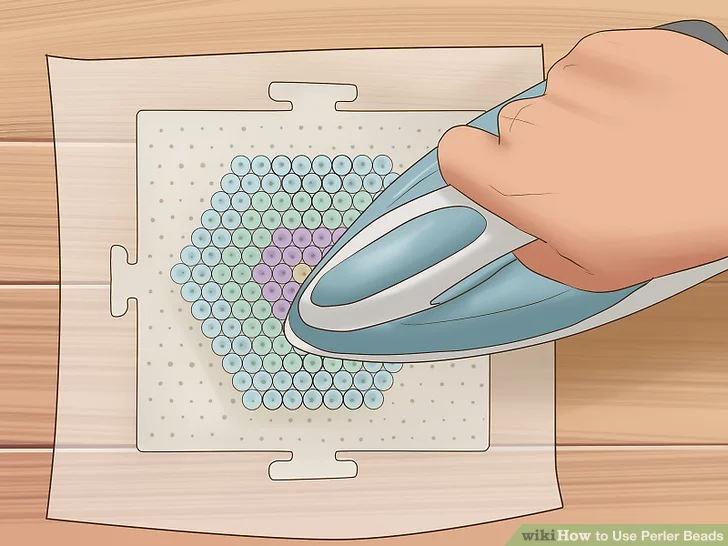

My Website
Hello and welcome to my Instructable for doing the art of Perler Beads!
Don't be afraid to make some mistakes! However I will teach a easy way to begin!
Step One
Assemble your Perler beading supplies. You'll need a flat, stable area to make your Perler bead design. The pegboard you'll be using for your beads has very small pegs, so an unlevel surface may cause the beads to fall off. In all, for your Perler beading project, you'll need:
- A peler pegboard
- An iron
- Perler Beads of all the same band
- Parchment paper
Choose your pegboard or use a pattern. There are many shapes you can choose from. You could create a dog, a fish, a hexagon, a shoe and so on. Perler makes many different shapes of pegboards, but you could also use a pattern and a clear Perler pegboard. There are free resources of patterns and tutorials online! Please start small as too big and the next step will be difficult.
Step Two
Bead according to the pattern. If you are following a shaped pegboard, like a pegboard shaped like a cat for example, you should slip the beads onto the raised pegs in the arrangement you desire. If you are using a clear, square shaped pegboard, you should slide a pattern underneath before beading, or you could create a freeform design of your own making.
Third and Final Step!
Heat your beads. Take your parchment paper, which is also sometimes called ironing paper, and place it over the beads on the pegboard. You should be careful when doing this so that you don't accidentally knock any beads out of place. Heat a dry iron to a medium setting, then slowly run it in a circular motion over the parchment paper. You'll have to continue this for about 10 seconds for the beads to stick together.
The amount of time this takes can vary depending on factors like the kind of iron you are using. You may want to remove your iron at intervals and check your design every five seconds. Applying too much heat could turn your design into a Perler pancake!
If you have an iron with a steam function, you should be sure this is turned off when heating your beads. Hot steam could affect the outcome of your design.
Wax paper can be used when heating your Perler beads, but this can leave a waxy residue on the finished product. Parchment paper, on the other hand, will not.
Peel away your parchment paper and allow time to cool. Take the parchment paper by one corner and peel it away from the pegboard. Your beads will be quite warm right after you finish ironing, so you should allow a few minutes to cool before handling your Perler art.
Your Perler bead design is now ready to show off! Remove it from the pegboard and show your friends the design you have created. Thank you for being patient and I hope your creation came out nicely!